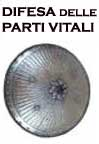
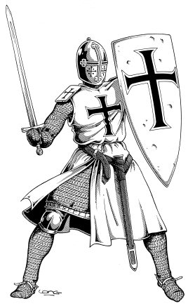
I combattenti più esperti conoscono i veri pericoli delle battaglie.
GUANTI
I guanti possono essere di vari materiali. Si noti che, a seconda del materiale del guanto, gli stessi si considereranno appartenere ad una corazza di un determinato tipo al fine di determinare la possibilità di loro utilizzo da parte di ministri del culto oppure le possibilità di utilizzo ai fini del lancio degli incantesimi (imponendo a chi li indossa la penalità al lancio delle magie prevista dalla relativa corazza). Si noti, invece, che i guanti, di qualsiasi categoria essi siano, non impongono a chi le indossa le penalità previste dalle rispettive corazze alle prove di destrezza né ai tiri salvezza. Infine, occorre precisare che, laddove non sia diversamente specificato nella descrizione del guanto, i vagabondi che utilizzano i guanti ottengono la prevista penalità alle prove nelle abilità da ladro.
PROTEZIONE DAL CRITICO - La protezione dal critico difende solo dai colpi critici che colpiscono le mani di chi indossa i guanti riducendo l'intensità del critico della percentuale prevista dalla tipologia di guanto. Ogni volta che i guanti subiscono un colpo critico, indipendentemente dal tiro di dado ottenuto, gli stessi dovranno effettuare il tiro salvezza indicato per evitare di rompersi definitivamente e diventare inservibili (ciò anche se il risultato ottenuto non ha poi dato luogo ad una ferita critica).
| TIPOLOGIA DI GUANTO | PESO | COSTO | PROTEZIONE DAL CRITICO | TIRO SALVEZZA ROTTURA DA COLPO CRITICO | CORAZZA EQUIVALENTE |
MODIFICATORE PICK POCKET |
MODIFICATORE OPEN LOCK |
MODIFICATORE FIND/REMOVE TRAP |
| GUANTI DI SETA ELFICA [R] | 0,1 LIBBRA | 20 CORONE | - 1 | 11 | Nessuna |
- 8 % |
- 4 % |
Nessuna |
| GUANTI DI SETA SILVERIANA [U] | 0,1 LIBBRA | 15 CORONE | - 1 | 12 | Nessuna |
- 10 % |
- 5 % |
Nessuna |
| GUANTI DI CANAPA [C] | 0,2 LIBBRA | 2 CORONE | - 2 | 10 | Nessuna |
- 12 % |
- 8 % |
- 3 % |
| GUANTI DI PELLE [U] | 0,4 LIBBRA | 12 CORONE | - 3 | 9 | Nessuna |
- 15 % |
- 10 % |
- 5 % |
| GUANTI DI CUOIO [C] | 0,5 LIBBRA | 5 CORONE | - 5 | 8 | Corazza di cuoio |
- 20 % |
- 15 % |
- 10 % |
| GUANTI DI MAGLIA METALLICA [U] | 1 LIBBRA | 10 CORONE | - 8 taglio - 5 punta -2 botta | 6 | Maglia di Ferro |
- 50 % |
- 40 % |
- 30 % |
Non vi è alcun dubbio che la parte vitale più importante del corpo di ogni combattente è costituita dalla testa e dal viso. Per tale motivo, nell'evoluzione dell'arte della guerra, i maestri corazzieri hanno creato vari tipi di elmi a difesa del viso e della testa del combattente. Si noti che chi acquista una qualsiasi armatura l'acquista sprovvista della protezione per la testa. L'elmo, infatti, va acquistato ed indossato a parte. Esistono quattro fondamentali tipologie di elmi, ognuna delle quali ha proprie caratteristiche. Indipendentemente dalla tipologia a tutti gli elmi si applica il seguente regolamento:
* A meno che non sia specificato diversamente, un personaggio che indossa un elmo si considererà indossare una corazza pari alla corazza equivalente della tipologia di elmo indossato (sempre che non ne indossi una più pesante); ciò anche ai fini del periodo massimo per il quale l'elmo può essere indossato (si noti che se il personaggio possiede l'arte di indossare la corazza equivalente della tipologia dell'elmo potrà indossare il relativo elmo per tutto l'arco della giornata).
* La protezione dal critico difende solo dai colpi critici che colpiscono la testa di chi indossa l'elmo riducendo l'intensità del critico della percentuale prevista dalla tipologia di elmo. Ogni volta che l'elmo subisce un colpo critico, indipendentemente dal tiro di dado ottenuto, l'elmo dovrà effettuare un tiro salvezza (specificato nella tipologia) per evitare di rompersi definitivamente e diventare inservibile (ciò anche se il risultato ottenuto non era un tiro critico).
* Per indossare e per rimuovere un elmo occorre un intero round, tranne per gli elmi completi da cavaliere per indossare e rimuovere i quali occorrono due rounds.
CAPPUCCIO DI TESSUTO
I cappucci di tessuto pesante forniscono una minima protezione dal critico e sono utilizzati per lo più al fine di proteggere la testa dalle intemperie.
| ARMATURA EQUIVALENTE | COSTO IN CORONE | PESO IN LIBBRE. | PROTEZIONE DAL CRITICO | TIRO SALVEZZA |
| NESSUNA | 3 corone | 0,5 lb. | - 2 % | 15 contro critico (materiale tessuto) |
MODIFICATORE AL TIRO DELLA SORPRESA:
nessuno
MODIFICATORE AL TIRO DI SENTIRE I RUMORI: nessuno
ELMO DI CUOIO
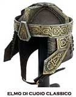 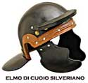
Gli elmi di cuoio rappresentano la categoria di elmi più economica e leggera, solitamente utilizzate dalle fanterie degli eserciti e dai combattenti meno esperti.
| ARMATURA EQUIVALENTE | COSTO IN CORONE | PESO IN LIBBRE. | PROTEZIONE DAL CRITICO | TIRO SALVEZZA |
| CUOIO RINFORZATA | 5 corone | 2 lbs. | - 5 % | 13 contro critico (materiale pelle o cuoio) |
MODIFICATORE AL TIRO DELLA SORPRESA:
nessuno
MODIFICATORE AL TIRO DI SENTIRE I RUMORI: penalità di - 5
%
COLLARE DI MAGLIA DI FERRO
I pesanti collari di maglia di ferro offrono un'ottima protezione sia alla testa che al collo dai colpi critici da taglio e da penetrazione che raggiungono la testa del combattente. Non offrono, invece alcuna protezione dai colpi critici da botta per i quali, del resto, non devono effettuare alcun tiro salvezza.
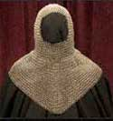
| ARMATURA EQUIVALENTE | COSTO IN CORONE | PESO IN LIBBRE. | PROTEZIONE DAL CRITICO | TIRO SALVEZZA |
| MAGLIA DI FERRO | 15 corone | 8 lbs. | - 8 % taglio - 5 % punta - 2 % botta |
8 contro critico (materiale metallo) |
MODIFICATORE AL TIRO DELLA SORPRESA:
penalità di + 1
MODIFICATORE AL TIRO DI SENTIRE I RUMORI: penalità di - 5
%
ELMI RIGIDI DI METALLO
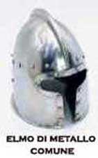
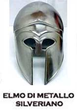
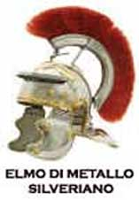
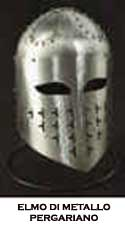
Gli elmi rigidi di metallo sono solitamente utilizzati dalle fanterie pesanti scelte, dagli ufficiali e dai combattenti esperti.
| ARMATURA EQUIVALENTE | COSTO IN CORONE | PESO IN LIBBRE. | PROTEZIONE DAL CRITICO | TIRO SALVEZZA |
| COTTA A BANDE | 30 corone | 5 lbs. | - 7 % | 9 contro critico (materiale metallo) |
REGOLE SUPPLEMENTARI
Chi indossa un elmo rigido di metallo ottiene un bonus
di +1 a tutti i tiri salvezza causati da effetti dirompenti ad area che causano
danno (ad es. soffio di un drago bianco, palla di fuoco). Sono
esclusi effetti ad area con natura non dirompente come gas, energia negativa,
ecc... ed effetti ad area che non causano danno, come ad es. entangle, ecc...
Chi indossa un elmo rigido di metallo non ha una visione perfetta di ciò che gli accade intorno per questo motivo ottiene una possibilità pari al 10% di fallire il lancio di incantesimi a distanza nonché una penalità di -1 a tutti i tiri per colpire a distanza.
MODIFICATORE AL TIRO DELLA SORPRESA:
penalità di + 1
MODIFICATORE AL TIRO DI SENTIRE I RUMORI: penalità di - 10
%
ELMO COMPLETO DA CAVALIERE
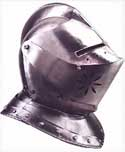
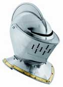
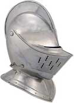
Gli elmi completi da cavalieri sono vere opere d'arte degli armaioli. Questi elmi forniti di celata in grado di chiudere quasi completamente l'accesso alla testa del combattente e dotati di protezione rigida per il collo e la gola forniscono la migliore protezione possibile contro i colpi critici diretti alla testa ed al viso.
| ARMATURA EQUIVALENTE | COSTO IN CORONE | PESO IN LIBBRE. | PROTEZIONE DAL CRITICO | TIRO SALVEZZA |
| PIASTRE DA GUERRA* | 90 corone | 10 lbs. | - 10 % | 7 contro critico (materiale metallo) |
* Possedere
l'arte di indossare le piastre complete da guerra permette di utilizzare
egualmente questa tipologia di elmi per l'intera giornata.
REGOLE SUPPLEMENTARI
* Chi indossa un elmo completo da cavaliere ottiene un
bonus di +2 a tutti i tiri salvezza causati da effetti dirompenti ad area che
causano danno (ad es. soffio di un drago bianco, palla di fuoco).
Sono esclusi effetti ad area con natura non dirompente come gas, energia
negativa, ecc... ed effetti ad area che non causano danno, come ad es. entangle,
ecc...
* Chi indossa un elmo completo da cavaliere ottiene un
bonus di +1 a tutti i tiri salvezza contro incantesimi ed altri effetti
indirizzati contro i propri occhi ed in generale contro effetti di accecamento
(ad es. light lanciato negli occhi, flash, sguardi di creature mostruose,
ecc...).
Chi indossa un elmo completo da cavaliere non ha una visione perfetta di ciò che gli accade intorno per questo motivo ottiene una possibilità pari al 30% di fallire il lancio di incantesimi a distanza nonché una penalità di -3 a tutti i tiri per colpire a distanza.
MODIFICATORE AL TIRO DELLA SORPRESA: penalità di + 2
MODIFICATORE AL TIRO DI SENTIRE I RUMORI: penalità di - 15
%
ELMI DI METALLI SPECIALI
Tutti gli elmi ad eccezione degli elmi di cuoio possono essere costruiti utilizzando metalli speciali. Nella sottostante tabella troverete i modificatori da applicare agli elmi costruiti con questi materiali.
| Materiale speciale | Costi di produzione | Valore di mercato | Modifica tiro salvezza |
| Argento | * 150 % | * 140 % | malus -2 |
| Bronzo | - 50 % | - 30 % | malus -1 |
| Arcanite | * 150 % | * 200 % | nessuno |
| Mithril |
* 200 % |
* 300 % | bonus +1 |
| Adamantium | * 250 % | * 400 % | bonus +2 |
| Materiale speciale | Penalità al check di produzione | Giorni supplementari di costruzione | Modifica al peso | Modificatore alla riduzione del critico |
| Argento | - 1 | + 25 % | - 10 % | +2 % |
| Bronzo | nessuna | nessuna | - 15 % | +1 % |
| Arcanite |
- 1 |
+ 50 % | nessuno | -2 % |
| Mithril |
- 2 |
+ 75 % | - 30 % | -3 % |
| Adamantium | - 3 | + 100 % | nessuno | -5 % |